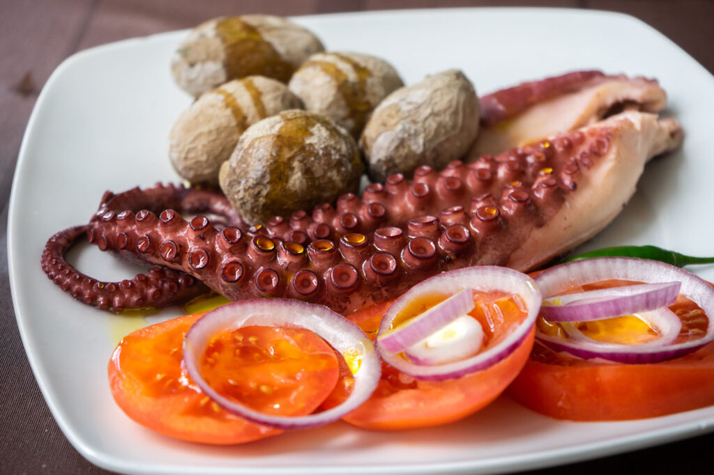
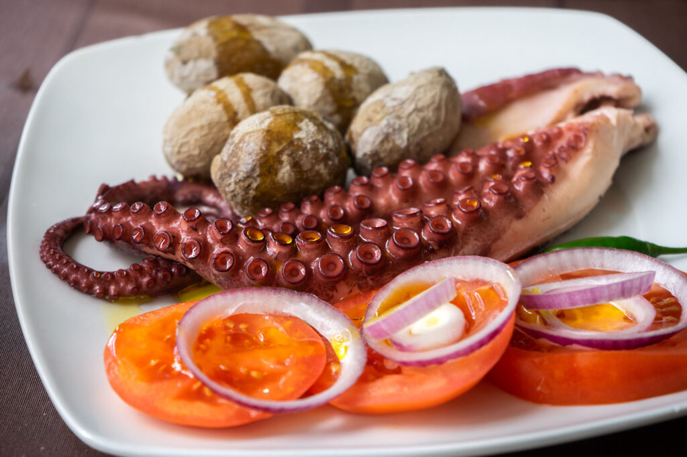
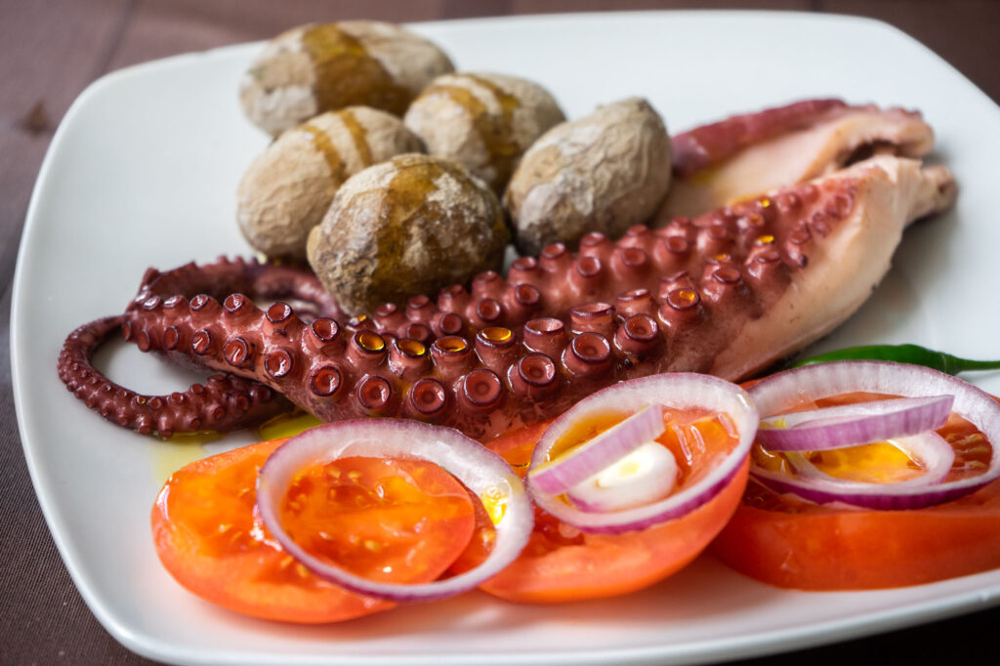

Ja vēlaties, varat vakariņās Tenerifē sēsties pie itāļu, taizemiešu vai pat peruāņu-japāņu fusion virtuves ēdieniem, taču jūs palaidīsit garām Tenerifes autentisko ēdienus. Šos restorānus ir viegli atrast, jo tie atrodas caur visu salu. Svaigas zivis, kas tiek ceptas uz grila vai pagatavotas smaržīgā buljonā, un trušu sautējums ir klasika, un salas. Kartupeļi tiek pasniegti ar Kanāriju salas izplatītajām sarkanajām un zaļajām “mojo” mērcēm.
No otras puses, drosmīgi ceļotāji varētu meklēt guačinču. Šie dzīvīgie, improvizētie restorāni, kas parasti atrodas garāžās vai ceļmalas nojumēs, nav pievilcīgi, bet piedāvā lielisku, autentisku un lētu vietējo ēdienu.

Dzērieni
Bet ko Tenerifē dzert bez vīna un alus? Protams, Rons (Rums). Pateicoties salas tropiskajam klimatam, agrāk cukurniedres tika ražotas dažās pasaules daļās, līdz ar Kristofora Kolumba ierašanos šo cukuru sāka izmantot vietējā destilāta pagatavošanai, ko galvenokārt izmantoja pirāti. Ronmiel ir ļoti salds rums, jo tas sastāv arī no medus un apelsīna ziediem un ir viens no salas kultūras mantojuma, kam piešķirts aizsargātas ģeogrāfiskās izcelsmes nosaukums. Tā gradācija svārstās no 20 līdz 30 grādiem.
Barraquito - Tenerifes slavenākā kafija, ar garšu, kas vienmēr atsauks atmiņā saulainas brīvdienas! Barraquito ir daudzslāņu kafijas veids, kas ir raksturīgs Kanāriju salām, un to var viegli atrast lielākajā daļā vietējo kafejnīcu.
 
